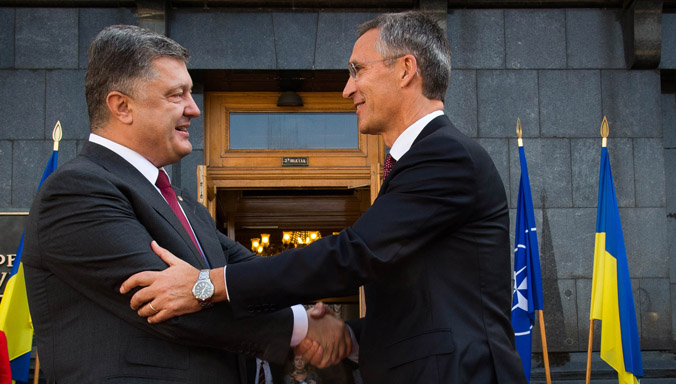

Relations with Ukraine

A sovereign, independent and stable Ukraine, firmly committed to democracy and the rule of law, is key to Euro-Atlantic security. Relations between NATO and Ukraine date back to the early 1990s and have since developed into one of the most substantial of NATO’s partnerships. Since 2014, in the wake of the Russia-Ukraine conflict, cooperation has been intensified in critical areas.